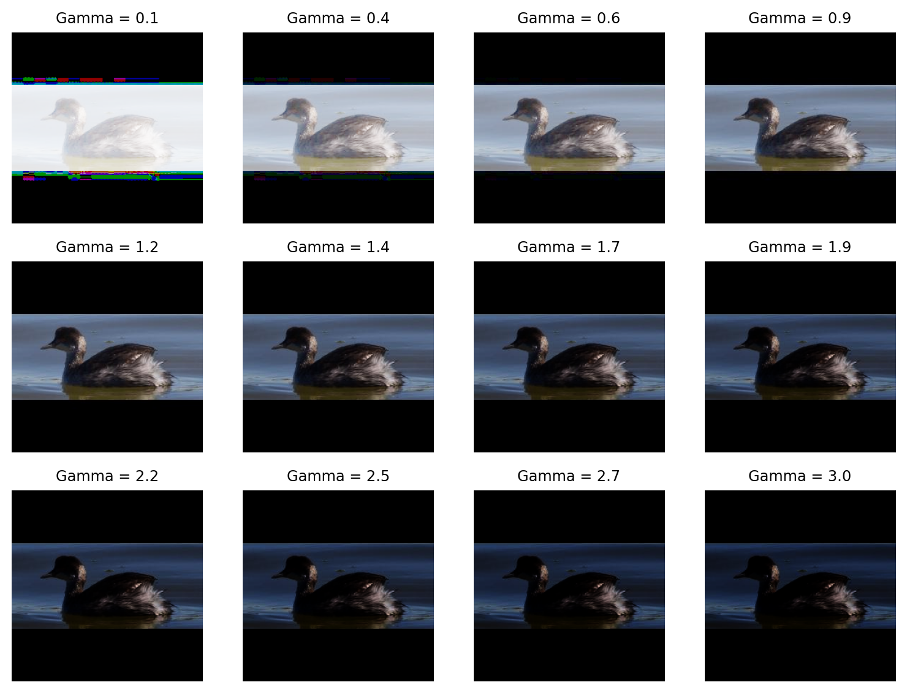
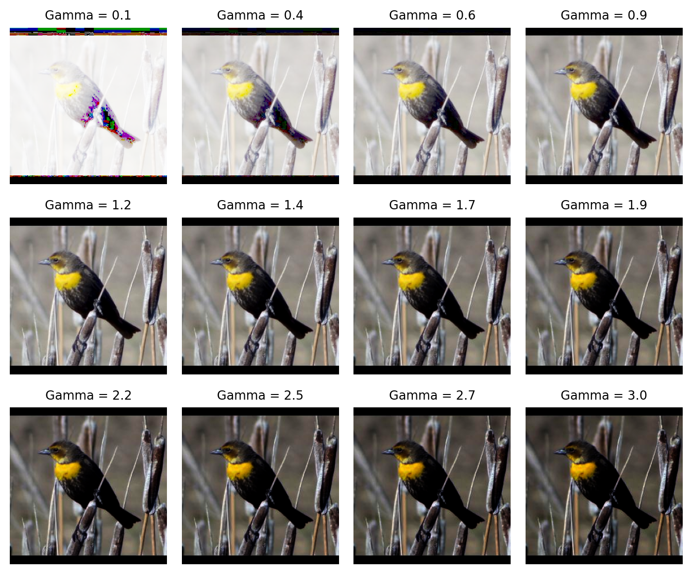
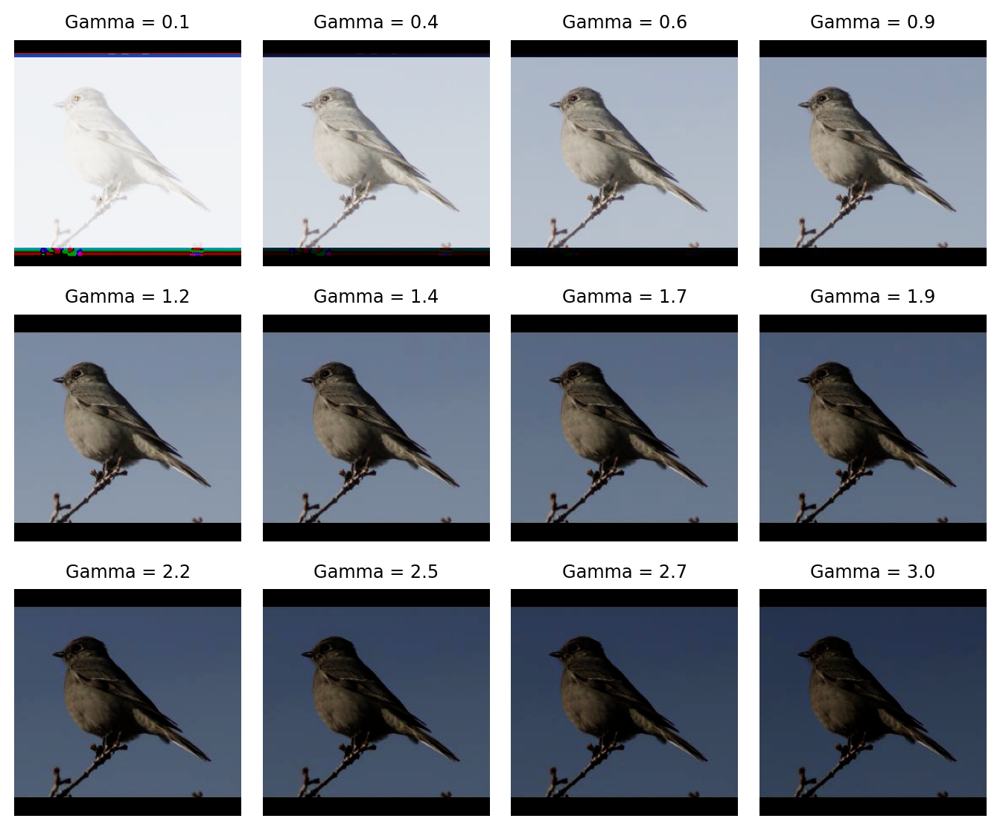
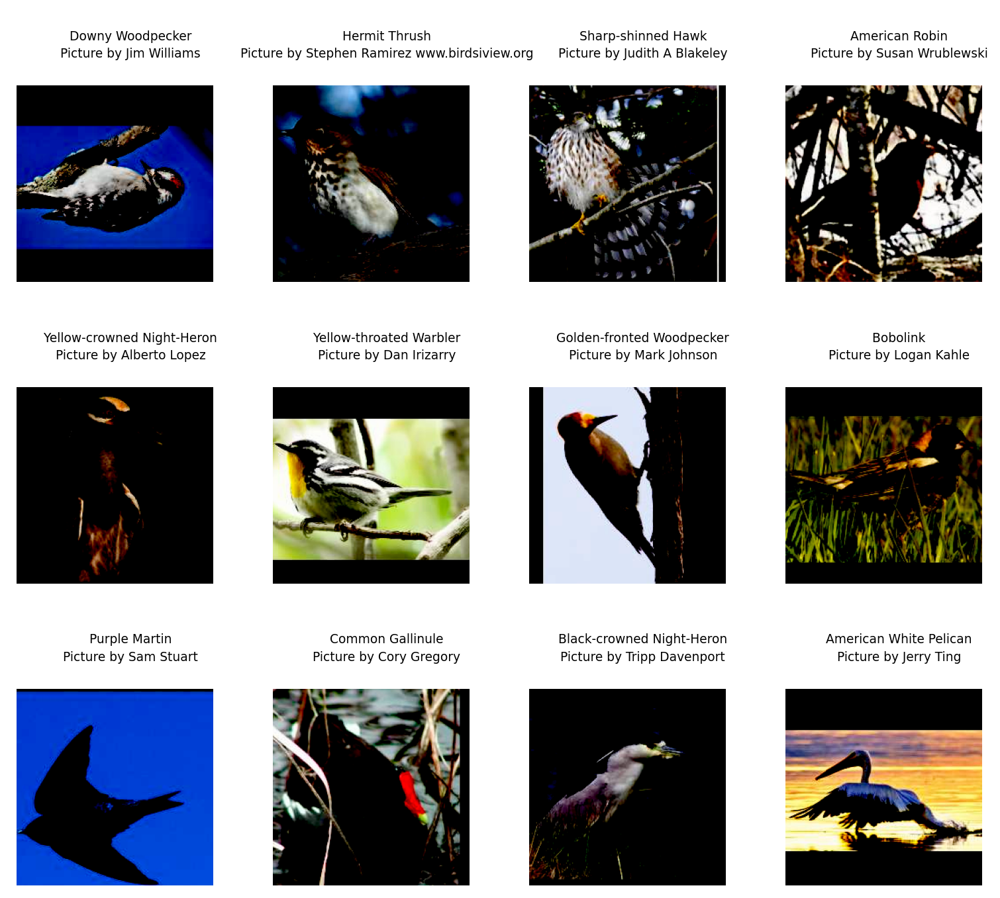
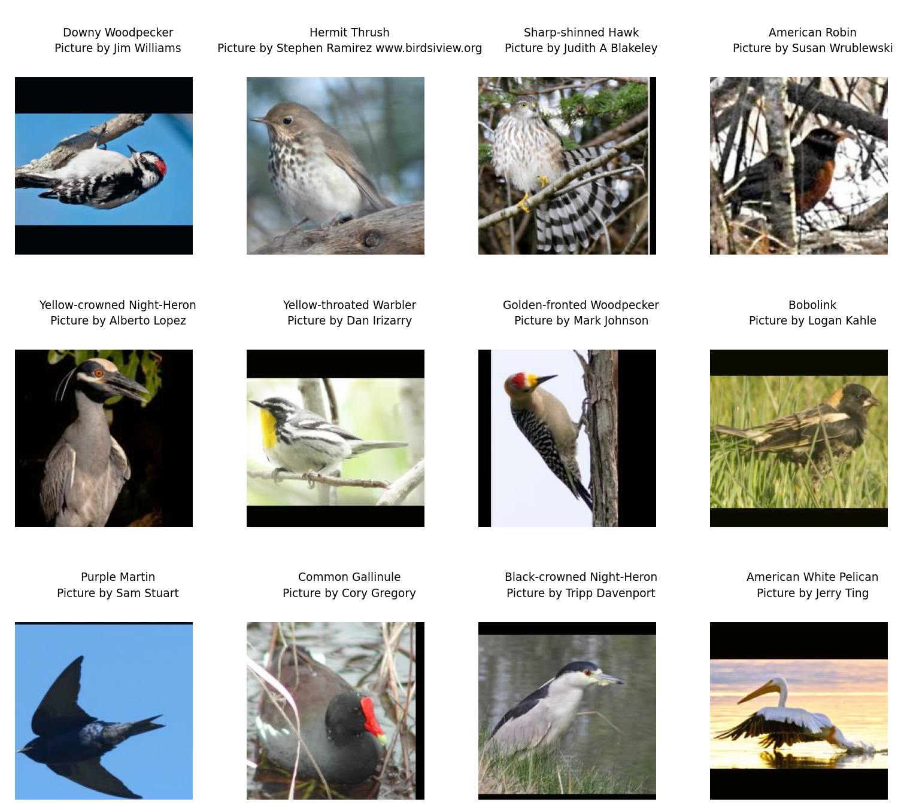
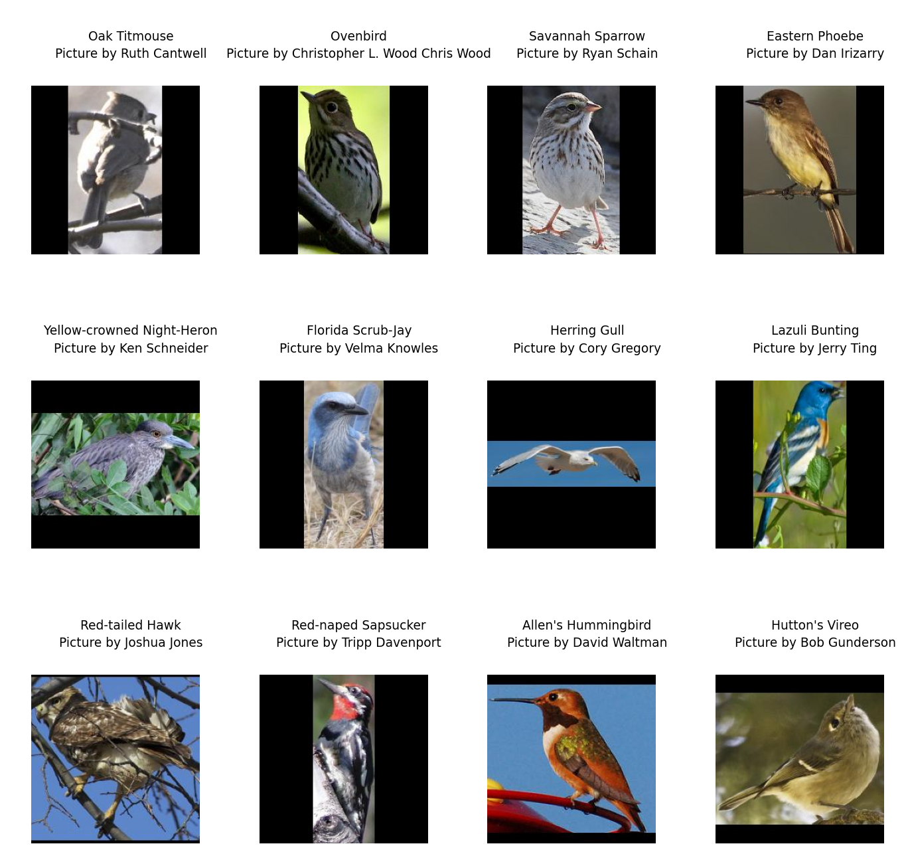

import os
import polars as pl
import imageio.v3 as iio
import grain.python as grain
metadata = pl.read_parquet('metadata.parquet')
metadata_train = metadata.filter(pl.col('is_training_img') == 1)
metadata_val = metadata.filter(pl.col('is_training_img') == 0)
cleaned_img_dir = os.path.join(base_dir, 'cleaned_images')
class NABirdsDataset:
"""NABirds dataset class."""
def __init__(self, metadata_file, data_dir):
self.metadata_file = metadata_file
self.data_dir = data_dir
def __len__(self):
return len(self.metadata_file)
def __getitem__(self, idx):
path = os.path.join(self.data_dir, self.metadata_file.get_column('path')[idx])
img = iio.imread(path)
species_name = self.metadata_file.get_column('species_name')[idx]
species_id = self.metadata_file.get_column('species_id')[idx]
photographer = self.metadata_file.get_column('photographer')[idx]
return {
'img': img,
'species_name': species_name,
'species_id': species_id,
'photographer': photographer,
}
nabirds_train = NABirdsDataset(metadata_train, cleaned_img_dir)
nabirds_val = NABirdsDataset(metadata_val, cleaned_img_dir)Data augmentation
Key to deep learning is data augmentation. This section explains what it is and what techniques we should use in our example.
What is data augmentation?
Training deep learning models requires vast amounts of labelled data. The more diverse and numerous the data, the better the models will perform on new, unseen data.
A number of labelled datasets exist, but they are only so big. Moreover, for specific applications, you will need to fine-tune models on specific data for which there might not be any labelled data. And labelling data is costly and time-consuming. In some cases, it might even be impossible because little unlabelled data exist (think for instance of rare tumours).
Data augmentation is the artificial creation of new data by modifying the existing data in small ways. It is very powerful to avoid overfitting, particularly where datasets are small (if you were lucky enough to have a huge dataset, you wouldn’t need to bother with data augmentation which would actually create an additional computationally costly step with extremely little benefit).
Xu et al. performed a comprehensive survey of image augmentation techniques for deep learning in 2023 [1], but the field is evolving very fast with new techniques coming out all the time.
Augmentation libraries
Data augmentation being such a classic technique, many libraries offer sets of augmentation tools. Among the very popular, we can list:
There are others.
Amarù et al. created a curated repository of libraries for data augmentation in computer vision [2].
In this course, we will use PIX, a library built for JAX which provides low-level, JAX-native image processing primitives that can be directly jitted and vmapped.
We are shifting paradigm here and moving from the CPU to the GPU. This is where JAX comes in.
Augmentation techniques
There are many techniques:
- Geometric transformations (flips, rotations, scaling, crops…).
- Color space transformations (brightness, contrast, gamma, hue, saturation, grayscale conversion, channel shuffling…).
- Noise transformations (Gaussian noise, blurring…).
- Occlusive transformations (erasing parts of the image).
- Mixing images (various techniques mixing images and appropriately applying the same treatment to labels).
Choosing techniques
How many to use?
The size of your dataset dictates how aggressively you should augment.
| Dataset size | Strategy | Recommended count |
|---|---|---|
| Tiny (<1k images) | Heavy augmentation. You should be worried about overfitting, so you need to create more artificial data | 4-6 techniques |
| Medium (1k - 100k) | Standard augmentation. Balance variety with training speed | 3-4 techniques |
| Large (>100K images) | Light augmentation. | 1-2 techniques |
| Massive (>1M images) | No augmentation. The data itself provides enough diversity. Augmentation will only slow down training. | 0 technique |
Our dataset contains about 50K images (including the validation set). This puts us in the medium category and a standard approach with 3 or 4 techniques should be reasonable.
Which ones to use?
The choice depends on the problem.
In our case, we are dealing with fine-grained birds identification. Colours are critical for species differentiation, so we don’t want to mess with that. This means that playing with hue, solarization, color jitter, or gray scale could be a bad idea as it might invalidate the labels (making one species actually look like another). Transformations that do not preserve the aspect ratio (squashing, warping) could be bad too as they might change the shape of discriminant features.
Vertical flips or 90° rotations would not be very useful as they wouldn’t produce realistic data …
There are a lot of more advanced techniques out there (CutMix, SnapMix, TransMix, Attention Drop), but let’s start with easier ones. For geometric techniques, let’s do random crops and random horizontal flips.
We can also do some photometric augmentation as long as they don’t invalidate the labels: brightness and contrast. If we want the model to be able to identify black and white pictures, we definitely need to remove the colour dependence by using a technique turning images to gray (with some probability and level of colour removal). If, on the other hand, we are only interested in having a model able to identify colour images, we want to stay away from this.
Let’s consider for instance random gamma adjustments and random contrast. They simulate different exposure levels and will improve the model’s robustness and performance by making it less sensitive to variations in lighting conditions.
Choosing the parameters
Picking the right bounds for each type of data augmentation involves balancing dataset diversity against image realism. If the range is too narrow, you don’t get much benefit, if it’s too wide, you might destroy critical features or create unrealistic images that confuse the model.
Default range
Check the industry-standards (look at the literature, ask an LLM, etc.).
For random crops, we don’t want to go too hard or we will crop out the distinguishing features of the birds.
For gamma, for most computer vision tasks (natural images, object detection, classification), the industry-standard starting point is 0.8 to 1.2.
This range simulates subtle lighting variations—like a cloud passing over the sun or a slight difference in camera exposure—without washing out the image or making it too dark to see details. This should be good for us.
Domain specific ranges
You might want to adjust the values based on your specific data type.
For instance, you can increase the gamma range for OCR (document analysis) because scanned documents often have wildly varying contrast and because text usually remains legible even under extreme gamma.
None of this applies to our example.
Visual sanity check
Never set augmentation parameters blindly. Visualize some tests to ensure the data you are using to train is still reasonable (and to make sure that you aren’t messing something up and getting totally absurd results!).
Let’s test various gamma values on the first 4 images in the training set:
import dm_pix as pix
import numpy as np
import matplotlib.pyplot as plt
import jax.numpy as jnpLet’s write a helper function that applies PIX deterministic adjust_gamma function to a JAX array image, then covert it to an RGB image that we can display:
def apply_gamma(img, gamma):
"""
Apply gamma transformation to a JAX array image
then turn it back into an RGB image for display.
"""
new_img = pix.adjust_gamma(
image=img,
gamma=gamma
)
rgb_img = (new_img * 255.0).astype(np.uint8)
gamma = round(gamma, 1)
return rgb_img, gammaThis next function will take a NumPy image from our Dataset class, turn it to a JAX array, apply our helper function apply_gamma, and display the result:
def show_tests(img, gamma_range):
"""
Turn the image into a JAX array,
run our apply_gamma function on it
(apply gamma then turn back to RGB image),
plot the RGB image.
"""
jnp_img = jnp.array(img, dtype=jnp.float32) / 255.
pics = []
gammas = []
for i in gamma_range:
pics.append(apply_gamma(jnp_img, i)[0])
gammas.append(apply_gamma(jnp_img, i)[1])
fig, axes = plt.subplots(3, 4, figsize=(8, 6))
axes = axes.flatten()
for i, ax in enumerate(axes):
ax.imshow(pics[i])
ax.axis('off')
ax.set_title(f'Gamma = {gammas[i]}', fontsize=9)
plt.tight_layout()
plt.show()Now we can apply it to a few images to get an idea of the effect and ensure nothing weird is going on. This will help us catch a coding mistake that could ruin the whole training process:
show_tests(nabirds_train[0]['img'], np.linspace(0.1, 3, 12))
0.6 to 1.2 seem ok.
show_tests(nabirds_train[1]['img'], np.linspace(0.1, 3, 12))
0.6 to 2.2 seem reasonable for this image.
show_tests(nabirds_train[2]['img'], np.linspace(0.1, 3, 12))
0.6 to 2.2 seem ok for this one.
show_tests(nabirds_train[3]['img'], np.linspace(0.1, 3, 12))
0.6 to 1.4 seem reasonable here.
For training, we will use random gamma as one of our transformation (we don’t want the deterministic function here since we want different transformations randomly applied at each epoch) with the min and max values set a bit more broadly than what is standard as our images seem to handle it OK. Let’s go with a min and max of 0.6 and 1.2 respectively.
You need to do similar checks for all augmentations that might lead to unpredictable results: you don’t want to try to train a model on images that are all black, crippled by artifacts, or smeared beyond recognition!
Validation check
You can adjust the probabilities and magnitudes of the various augmentation techniques you chose based on the validation performance you get during training.
You can train a small version of your model (or for fewer epochs) and check how the validation loss improves with various variations of your augmentation strategy.
I recently gave a webinar on MLflow which would be the perfect tool for this kind of comparison.
Our plan for the train set
Image normalization
Before anything else, we need to normalize our images.
Our images are currently stored as NumPy arrays of type integers ranging from 0 to 255 (the values of the pixels):
print(nabirds_train[0]['img'].dtype)uint8It is a classic normalization technique to divide these pixel values by 255 to bring them in the 0-1 range. This improves performance and stability in training.
To ensure that all features contribute equally and improve performance, it is also a standard practice to turn the pictures into standard scores (z-scores) by subtracting each data point by the mean and dividing by the standard deviation.
In our case, we have to do it because the ViT model that we will eventually use was pretrained on images preprocessed this way and it is important to use the same normalization as was used for the pretrained model.
Let’s create a first transformation that does exactly that:
import numpy as np
class Normalize(grain.MapTransform):
def map(self, element):
img = element['img']
# Image preprocessing matches the one of pretrained ViT
mean = np.array([0.5, 0.5, 0.5], dtype=np.float32)
std = np.array([0.5, 0.5, 0.5], dtype=np.float32)
img = img.astype(np.float32) / 255.0
img_norm = (img - mean) / std
element['img'] = img_norm
return elementOur augmentation strategy
Random crop:
from jax import random
import dm_pix as pix
key = random.key(31)
key, subkey = random.split(key)
class RandomCrop(grain.MapTransform):
def map(self, element):
element['img'] = pix.random_crop(
key=subkey,
image=element['img'],
crop_sizes=(224, 224, 3)
)
return elementRandom flip:
key, subkey = random.split(key)
class RandomFlip(grain.MapTransform):
def map(self, element):
element['img'] = pix.random_flip_left_right(
key=subkey,
image=element['img']
)
return elementRandom contrast:
key, subkey = random.split(key)
class RandomContrast(grain.MapTransform):
def map(self, element):
element['img'] = pix.random_contrast(
key=subkey,
image=element['img'],
lower=0.8,
upper=1.2
)
return elementRandom gamma (using the bounds we tested earlier):
key, subkey = random.split(key)
class RandomGamma(grain.MapTransform):
def map(self, element):
element['img'] = pix.random_gamma(
key=subkey,
image=element['img'],
min_gamma=0.6,
max_gamma=1.2
)
return elementPass to DataLoader
We can now pass the transformations to the DataLoader. We can combine Transforms together very easily with Grain (no need of a Compose class with Grain as with TorchVision):
seed = 123
train_batch_size = 32
# Train set sampler:
train_sampler = grain.IndexSampler(
num_records=len(nabirds_train),
shuffle=True, # We shuffle the training set
seed=seed,
shard_options=grain.NoSharding(), # No sharding for a single-device setup
num_epochs=None # The default (infinite stream of data)
)
# Train set DataLoader:
train_loader = grain.DataLoader(
data_source=nabirds_train,
sampler=train_sampler,
operations=[
Normalize(),
RandomCrop(),
RandomFlip(),
RandomContrast(),
RandomGamma(),
grain.Batch(train_batch_size, drop_remainder=True)
]
)The importance of checks
We have our DataLoader for the training set and we could start training, potentially spending hours or days trying to train a model … with terrible results.
Before starting to train, it is crutial to check that your samples look the way you expect them to.
Let’s get some info on a batch:
train_batch = next(iter(train_loader))
print(f"""
training batch info:
- img shape is {train_batch['img'].shape} and data type is {train_batch['img'].dtype}
- species_name shape is {train_batch['species_name'].shape} and data type is {train_batch['species_name'].dtype}
- species_id shape is {train_batch['species_id'].shape} and data type is {train_batch['species_id'].dtype}
- photographer shape is {train_batch['photographer'].shape} and data type is {train_batch['photographer'].dtype}
""")
training batch info:
- img shape is (32, 224, 224, 3) and data type is float32
- species_name shape is (32,) and data type is <U26
- species_id shape is (32,) and data type is int64
- photographer shape is (32,) and data type is <U34
All looks as expected.
And let’s plot a few processed training images:
fig = plt.figure(figsize=(8, 8))
for i in range(12):
ax = plt.subplot(3, 4, i + 1)
plt.tight_layout()
ax.set_title(
f"""
{train_batch['species_name'][i]}
Picture by {train_batch['photographer'][i]}
""",
fontsize=7,
linespacing=1.5
)
ax.axis('off')
rgb_img = (
(train_batch['img'][i] - train_batch['img'][i].min()) / (train_batch['img'][i].max() - train_batch['img'][i].min()) * 255.0
).astype(np.uint8)
plt.imshow(rgb_img)
plt.show()
Oh no!!!! What happened?
We checked carefully that our gamma adjustment bounds are reasonable and we chose very moderate brightness adjustment, so what happened?
Z-score normalization creates negative values (roughly half the pixels will be negative). But dm-pix expects [0, 1] inputs, so by default, it clips all negative values to 0. This immediately turns half your image black.
Why does dm-pix do this clipping? Without this, the gamma math would fail: gamma correction uses exponentiation (pixel to the power of gamma) and you cannot raise negative numbers to a floating-point power.
As a result, all the pixels that were darker than average (negative z-scores) were forced to pure black (value of 0).
What is the solution?
We could change the order of the transformations and move our Normalize class after the PIX augmentations. But this would also fail because PIX expects [0, 1] values and we have [0, 255] values.
So we have no choice but to break our normalization into 2 steps. Here is the order of transformations that we need to use:
- Convert the integers 0–255 images to floats 0–1 images.
- Apply random gamma, brightness, etc. from the PIX library.
- Apply the specific mean/std normalization expected by the model.
Note that different augmentation libraries might have different behaviours, so you need to check carefully what inputs the augmentation library you use expects.
So let’s fix our problem.
First, split our Normalize class into two steps.
A first step to turn the RGB integers to 0–1 floats:
class ToFloat(grain.MapTransform):
def map(self, element):
element['img'] = element['img'].astype(np.float32) / 255.0
return elementAnd a second step to create the z-scores:
class ZScore(grain.MapTransform):
def map(self, element):
img = element['img']
mean = np.array([0.5, 0.5, 0.5], dtype=np.float32)
std = np.array([0.5, 0.5, 0.5], dtype=np.float32)
img = (img - mean) / std
element['img'] = img
return elementFinally, we apply the transformations in the proper order:
train_loader = grain.DataLoader(
data_source=nabirds_train,
sampler=train_sampler,
operations=[
ToFloat(),
RandomCrop(),
RandomFlip(),
RandomContrast(),
RandomGamma(),
ZScore(),
grain.Batch(train_batch_size, drop_remainder=True)
]
)We recreate a batch:
train_batch = next(iter(train_loader))Let’s plot a sample again:
fig = plt.figure(figsize=(8, 8))
for i in range(12):
ax = plt.subplot(3, 4, i + 1)
plt.tight_layout()
ax.set_title(
f"""
{train_batch['species_name'][i]}
Picture by {train_batch['photographer'][i]}
""",
fontsize=7,
linespacing=1.5
)
ax.axis('off')
rgb_img = (
(train_batch['img'][i] - train_batch['img'][i].min()) / (train_batch['img'][i].max() - train_batch['img'][i].min()) * 255.0
).astype(np.uint8)
plt.imshow(rgb_img)
plt.show()
This time, things look as expected. Phew!
What about the validation set?
You don’t want to apply any augmentation to the evaluation set. However, these images must match the normalization of the training set. Here, it is ok to use our Normalize class that combines both normalizations.
Pass to DataLoader
Pass transformations to the DataLoader:
val_batch_size = 2 * train_batch_size
# Validation set sampler:
val_sampler = grain.IndexSampler(
num_records=len(nabirds_val),
shuffle=False, # We don't shuffle the validation set
seed=seed,
shard_options=grain.NoSharding(),
num_epochs=1
)
# Validation set DataLoader:
val_loader = grain.DataLoader(
data_source=nabirds_val,
sampler=val_sampler,
# worker_count=4, # If you have the resources (I don't)
# worker_buffer_size=2,
operations=[
Normalize(),
grain.Batch(val_batch_size)
]
)Checks
Here again, we want to make sure all is fine by gathering some info on a batch:
val_batch = next(iter(val_loader))
print(f"""
Validation batch info:
- img shape is {val_batch['img'].shape} and data type is {val_batch['img'].dtype}
- species_name shape is {val_batch['species_name'].shape} and data type is {val_batch['species_name'].dtype}
- species_id shape is {val_batch['species_id'].shape} and data type is {val_batch['species_id'].dtype}
- photographer shape is {val_batch['photographer'].shape} and data type is {val_batch['photographer'].dtype}
""")
Validation batch info:
- img shape is (64, 224, 224, 3) and data type is float32
- species_name shape is (64,) and data type is <U26
- species_id shape is (64,) and data type is int64
- photographer shape is (64,) and data type is <U34
And displaying some samples:
fig = plt.figure(figsize=(8, 8))
for i in range(12):
ax = plt.subplot(3, 4, i + 1)
plt.tight_layout()
ax.set_title(
f"""
{val_batch['species_name'][i]}
Picture by {val_batch['photographer'][i]}
""",
fontsize=7,
linespacing=1.5
)
ax.axis('off')
rgb_img = (
(val_batch['img'][i] - val_batch['img'][i].min()) / (val_batch['img'][i].max() - val_batch['img'][i].min()) * 255.0
).astype(np.uint8)
plt.imshow(rgb_img)
plt.show()
Everything looks good here. It is now time to talk about models.
References
1.
Xu M, Yoon S, Fuentes A, Park DS (2023) A comprehensive survey of image augmentation techniques for deep learning. Pattern Recognition 137:109347. https://doi.org/10.1016/j.patcog.2023.109347
2.
Amarù S, Marelli D, Ciocca G, Schettini R (2023) DALib: A curated repository of libraries for data augmentation in computer vision. Journal of Imaging 9(10). https://doi.org/10.3390/jimaging9100232